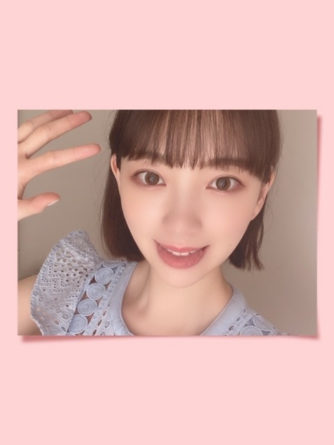

2020/0604Thuナツ
もう夏ですねー
みなさん暑さ対策はバッチリですか？
わたしは暑がりなので部屋ではノースリーブや
キャミなどを着て過ごしています。笑
7.8月大丈夫かな。笑


水分はまめにとらなきゃ。が
最近の、口癖です
明日は早起きしよ〜
そんな気分（╹◡╹）


桃食べたい.........(´；ω；｀)
では
2020/06/04 21:45
コメント(287)
好き
こんばんわん
ブログ更新ありがと！
最近暑くなってきたね～
だけど私はオンライン授業で家にずっといるから、暑さを全く感じない笑
未だに長袖でいます
今年家の中が謎に涼しいです
水分はしっかり取ることが大事だね
髪切った？
勘違いかもしれないけど、少し短くなった気がする
ではまた(*´▽｀*)
ブログ更新ありがと！
最近暑くなってきたね～
だけど私はオンライン授業で家にずっといるから、暑さを全く感じない笑
未だに長袖でいます
今年家の中が謎に涼しいです
水分はしっかり取ることが大事だね
髪切った？
勘違いかもしれないけど、少し短くなった気がする
ではまた(*´▽｀*)
未央奈ちゃん、ブログ更新ありがとう!!
写真どれも可愛いよ！
今日学校がめっちゃ暑くてエアコンなしじゃ授業受けれんかった…
体調には気を付けてね！
またね！
写真どれも可愛いよ！
今日学校がめっちゃ暑くてエアコンなしじゃ授業受けれんかった…
体調には気を付けてね！
またね！
あなたにとって素敵なナツになることを願ってます。
僕は好きなバンドのタンクトップ買います！
水分補給は大事ですね。
水分補給は大事ですね。
未央奈ちゃん服がなんでも似合う〜
まだ6月なのに8月上旬並の暑さが続いていてほんとに今年の夏大丈夫か心配になりますよね〜
未央奈ちゃんも熱中症や体にほんとに気をつけてくださいね！
お互い熱中症やコロナに打ち勝ちましょう！
まだ6月なのに8月上旬並の暑さが続いていてほんとに今年の夏大丈夫か心配になりますよね〜
未央奈ちゃんも熱中症や体にほんとに気をつけてくださいね！
お互い熱中症やコロナに打ち勝ちましょう！
未央奈ちゃん♪ブログの更新ありがとうね♪凄く嬉しいよ♪もう夏だよね。今日も暑かったね(^_^;)自分は半袖に短パンで過ごしてるよ(笑)自分も凄く暑がりだから７月、８月大丈夫かなって思ってるよ(^_^;)水分補給は大事だよね！自分もこまめに水分補給してるよ。桃食べたいね♪
自分は明日は用事があるから早起きだよ♪明日も暑いから気を付けてね。水分補給してね♪
また、ブログの更新楽しみにしてるね♪未央奈ちゃん大好きだよ♪では！
堀 未央奈神推し秀喜より！(≧∇≦)
自分は明日は用事があるから早起きだよ♪明日も暑いから気を付けてね。水分補給してね♪
また、ブログの更新楽しみにしてるね♪未央奈ちゃん大好きだよ♪では！
堀 未央奈神推し秀喜より！(≧∇≦)
ブログ更新ありがとう
最近一気に暑くなってヤバイよね
未央奈の写真集見て元気だして仕事頑張ります
最近一気に暑くなってヤバイよね
未央奈の写真集見て元気だして仕事頑張ります
未央奈ちゃんブログ更新ありがとう！
もう夏だね〜
美白ケア、未央奈ちゃん参考にして頑張ってます！
水分もしっかり取って元気な状態ではやくあいたい（ ; ; ）
いつもありがとう、次のブログもたのしみにしてるね！
もう夏だね〜
美白ケア、未央奈ちゃん参考にして頑張ってます！
水分もしっかり取って元気な状態ではやくあいたい（ ; ; ）
いつもありがとう、次のブログもたのしみにしてるね！
更新ありがとう❤
確かに暑いね～
僕は暑いけど夏が好きかも。
桃美味しいよね～。
今年は桃まだ食べてないな～
僕も食べたくなってきた。
体調に気をつけてね。
写真かわいい～
確かに暑いね～
僕は暑いけど夏が好きかも。
桃美味しいよね～。
今年は桃まだ食べてないな～
僕も食べたくなってきた。
体調に気をつけてね。
写真かわいい～
未央奈～ こんにちは
ブログ更新ありがとうございます。
６月というのに、早くも暑いですね。明日は岐阜で３３℃、高山でも３１℃だそうですよ。もう真夏同然‥‥‥。今週からいつもの時間にもどっての生活になっただけに、とにかく今週は長～い。
でもその中にあって、未央奈の写真、前の３枚見ていると癒されます。
昨日の「レコメン」で、恒例の「顔だけ総選挙」が発表になってましたが、未央奈も当然入賞、絢音ちゃんが健闘してましたね。来週のレコメンは「坂道交流」の３日間だそうですが、本当は未央奈もゆかのすけちゃん(菅井友香ちゃん)と仲いいのに‥‥。まゆたんに託すことにしましょう。
桃？ こちらも楽しみですね。昨日のスイカおいしかったのでは？ 今年は殊のほかマスカット食べてるから‥‥。
ブログ更新ありがとうございます。
６月というのに、早くも暑いですね。明日は岐阜で３３℃、高山でも３１℃だそうですよ。もう真夏同然‥‥‥。今週からいつもの時間にもどっての生活になっただけに、とにかく今週は長～い。
でもその中にあって、未央奈の写真、前の３枚見ていると癒されます。
昨日の「レコメン」で、恒例の「顔だけ総選挙」が発表になってましたが、未央奈も当然入賞、絢音ちゃんが健闘してましたね。来週のレコメンは「坂道交流」の３日間だそうですが、本当は未央奈もゆかのすけちゃん(菅井友香ちゃん)と仲いいのに‥‥。まゆたんに託すことにしましょう。
桃？ こちらも楽しみですね。昨日のスイカおいしかったのでは？ 今年は殊のほかマスカット食べてるから‥‥。
みおちゃーん♡
最近急に暑いよねぇ。
マスク熱中症になりそうよ…。
今年の夏は乃木坂のライブ難しいかなぁ。
全ツがないと夏を感じられないo( T⌓T)o
前髪切ったの可愛いね。
髪短くすると幼くなってる気がするよ。
そろそろ桃の季節やね。
水分補給しっかりね。身体には気をつけて！
最近急に暑いよねぇ。
マスク熱中症になりそうよ…。
今年の夏は乃木坂のライブ難しいかなぁ。
全ツがないと夏を感じられないo( T⌓T)o
前髪切ったの可愛いね。
髪短くすると幼くなってる気がするよ。
そろそろ桃の季節やね。
水分補給しっかりね。身体には気をつけて！
堀ちゃんブログ更新ありがとう！
昨日の夜、蚊に刺された！かゆい！でも夏が来た感じ。
堀ちゃんは夏になると絶対食べる物ある？
今年の夏はどうなるのかなー では
昨日の夜、蚊に刺された！かゆい！でも夏が来た感じ。
堀ちゃんは夏になると絶対食べる物ある？
今年の夏はどうなるのかなー では
こんばんは
ここずっと扇風機つけっぱなしです
上の三枚の未央ちゃん なんか桃みたい 可愛い
下の二枚は大人っぽくて、ちょっとダークな感じで綺麗
ここずっと扇風機つけっぱなしです
上の三枚の未央ちゃん なんか桃みたい 可愛い
下の二枚は大人っぽくて、ちょっとダークな感じで綺麗
未央奈さん、ブログありがとう！
今週から半袖にしました。外を歩くと汗ばんできます。水分とってますよー。お茶やコーラ飲みながら仕事してます。
今日の写真も可愛い。特に最後の2枚。可愛くてキレイでワイルドな感じがたまらんです。
今週から半袖にしました。外を歩くと汗ばんできます。水分とってますよー。お茶やコーラ飲みながら仕事してます。
今日の写真も可愛い。特に最後の2枚。可愛くてキレイでワイルドな感じがたまらんです。
♪♪♪♪♪♪
堀未央奈さま
♪♪♪♪♪♪
ども神奈川の勇樹です
が岐阜県出身です
桃ならいるやん
大園さんという桃が
つまり大園産の桃
堀未央奈さま
♪♪♪♪♪♪
ども神奈川の勇樹です
が岐阜県出身です
桃ならいるやん
大園さんという桃が
つまり大園産の桃
未央奈ちゃんいつもかわいい写真あげてくれてありがとう
ブログ更新するたびに1日の疲れが吹っ飛びます笑笑
本当に癒されてます！
お体に気をつけて、これからの活躍楽しみにしてます‼︎
ブログ更新するたびに1日の疲れが吹っ飛びます笑笑
本当に癒されてます！
お体に気をつけて、これからの活躍楽しみにしてます‼︎
水分補給しっかりとね！
これから夏本番だから辛い 俺は暑いよりかは寒いほうがいいなー 今年の夏も頑張って乗りきらないと サーキュレーターとエアコン最近使い始めた 家族とダンスまだやってるの？ まだコロナは収束してないから体調には気をつけてねー
ブログ更新ありがとうございます
最近は毎日未央奈さんの写真集見てます
未央奈さんは本当にステキな女性ですね❗️❗️
最近は毎日未央奈さんの写真集見てます
未央奈さんは本当にステキな女性ですね❗️❗️
わあああ❕笑顔・・
みおちゃん、写メめちゃめちゃ可愛えええ～～～⤴️⤴️❕❤️❤️❤️❤️❤️❇️❇️❇️笑顔
この服、おいら好きです❕❤️❤️❤️❤️❤️❇️❇️❇️笑顔
ところで、暑さ対策❕・・
おいらも、しっかりしています❕笑顔
仕事着を、着る前に～～
両肩にカイロを貼って、ネックウォーマーをつけて長袖を着ます❕笑顔
ん❕❔・・・
寒さ対策❕笑顔
外では、勿論半袖1枚です❕笑顔
ラフです❕笑顔
❇️❇️おすまし！⚜️❇️⭐彡
ブログ更新ありがとう!
ほんと暑いから熱中症注意だよ!
ブログとモバメで毎日癒やされてるよ
明日からも頑張りましょう!
桃は皮剥いて丸ごとかじって食べたい?
その時は歯がしみたりするの注意してね?
でもちゃんと切ってから食べる方が良いか?
食べたらどういう風に食べたか教えてね!
未央奈大好きです!
ほんと暑いから熱中症注意だよ!
ブログとモバメで毎日癒やされてるよ
明日からも頑張りましょう!
桃は皮剥いて丸ごとかじって食べたい?
その時は歯がしみたりするの注意してね?
でもちゃんと切ってから食べる方が良いか?
食べたらどういう風に食べたか教えてね!
未央奈大好きです!
桃は山梨の特産品なんだー！！
美味しいから山梨来て食べて欲しいよぉ。。(๑o̴̶̷̥᷅﹏o̴̶̷̥᷅๑)
とっても甘くて美味しい『白桃』がオススメだよー！
美味しいから山梨来て食べて欲しいよぉ。。(๑o̴̶̷̥᷅﹏o̴̶̷̥᷅๑)
とっても甘くて美味しい『白桃』がオススメだよー！
夏は暑い！暑くて暑い！とにかく暑くて、秋が待ち遠しい…
昔の夏は午前中が涼しくて、お昼頃から暑くなり、夜の８時頃には涼しくなるという、過ごしやすい夏でした。暑さもカラッとした暑さ。
でも、今の夏は日中夜むし暑くて、じめじめした暑さ。寝苦しさ満点のサウナ状態。いつから夏がこんなに変わってしまったんでしょうか。昔の夏に戻って欲しいわ〜
未央奈ちゃん、冷たいものを食べ過ぎておなかを壊さないよう気を付けてね♪
昔の夏は午前中が涼しくて、お昼頃から暑くなり、夜の８時頃には涼しくなるという、過ごしやすい夏でした。暑さもカラッとした暑さ。
でも、今の夏は日中夜むし暑くて、じめじめした暑さ。寝苦しさ満点のサウナ状態。いつから夏がこんなに変わってしまったんでしょうか。昔の夏に戻って欲しいわ〜
未央奈ちゃん、冷たいものを食べ過ぎておなかを壊さないよう気を付けてね♪
未央奈～～～～～～～～～～～～～～～～～～～～～。桃もすももも、桃のうち。桃好き。バイナッポ～も好き。暑いと蚊が出るわ。蚊、大嫌い。
暑いのは大嫌いだけど、ビールは好き～。サワーの方が好き。未央奈は？
またっねぇ。更新、またおなしゃーすね。
暑いのは大嫌いだけど、ビールは好き～。サワーの方が好き。未央奈は？
またっねぇ。更新、またおなしゃーすね。
ブログ更新お疲れさま～
毎回コメントするって宣言したのに、コメントするの忘れるとこだった(笑)
俺も明日早起きしよー５時くらいに起きてみようかな………！？(笑)
毎回コメントするって宣言したのに、コメントするの忘れるとこだった(笑)
俺も明日早起きしよー５時くらいに起きてみようかな………！？(笑)
未央奈さん、ブログ更新ありがとう。どこにでもいるおっさんです。
いや～、マジで暑いね。
あおいで～
未央奈さんのブログとモバメに癒される日々です。
スイカ食べたい…
では
ひでき
いや～、マジで暑いね。
あおいで～
未央奈さんのブログとモバメに癒される日々です。
スイカ食べたい…
では
ひでき
堀ちゃん、ブログ更新ありがとう〜
水分大事だよねー
コーヒーばかり飲み過ぎてるので、
お茶と交互に飲んでるよー
明日やっと、堀工事中届きます！
明日が楽しみだよー
堀ちゃんがやっぱり、大好きだよー
水分大事だよねー
コーヒーばかり飲み過ぎてるので、
お茶と交互に飲んでるよー
明日やっと、堀工事中届きます！
明日が楽しみだよー
堀ちゃんがやっぱり、大好きだよー
ブログありがとう！
まだ6月上旬なのに本当に暑いですよね、、
毎日学校大変です笑
本格的に夏になったらどうなることやら、、
このご時世だから暑いけどマスクつけなきゃいけないから熱中症になりそうですよね。
未央奈も気をつけてください！
まだ6月上旬なのに本当に暑いですよね、、
毎日学校大変です笑
本格的に夏になったらどうなることやら、、
このご時世だから暑いけどマスクつけなきゃいけないから熱中症になりそうですよね。
未央奈も気をつけてください！
堀ちゃんブログ更新ありがとう！
自分も今シャツ1枚なので心配です
水分補給しっかりしようと思います
桃を食べたら教えてください！
次のブログも楽しみにしてます
自分も今シャツ1枚なので心配です
水分補給しっかりしようと思います
桃を食べたら教えてください！
次のブログも楽しみにしてます
暑さ対策はバッチシですよ。僕は寒がりなので暑いのは平気です。けど、水分補給はしっかりするよう心がけています❗
これからますます暑くなるのでお気をつけ下さい。
これからますます暑くなるのでお気をつけ下さい。
みおなちゃん！
ブログ更新ありがとう！
最近暑いよね！！(--;)
風呂上がりはずっとうちわで扇いでる！笑
みおなちゃん腕細いから羨ましい！
私はぷにぷにだからノースリーブ着れない！
細くなる方法とかあるのかな？？( ˊᵕˋ ;)
今日もかわいい写真ありがとう！！
桃おいしいよね！
夏はフルーツが食べたくなるね！
ブログ更新ありがとう！
最近暑いよね！！(--;)
風呂上がりはずっとうちわで扇いでる！笑
みおなちゃん腕細いから羨ましい！
私はぷにぷにだからノースリーブ着れない！
細くなる方法とかあるのかな？？( ˊᵕˋ ;)
今日もかわいい写真ありがとう！！
桃おいしいよね！
夏はフルーツが食べたくなるね！
ほんと。夏だね。あちー
暑さ対策大事よねー。夏バテしそうだからさっぱりしたものとか食事を意識してる〜
なんとか7、8月も乗り越えよう。。
かわいい！！写真ありがと。
すき！
口癖笑った。
ほんと水分はまめにとらなきゃ！
早起きだね〜(たぶん寝てるから先に言っとくスタイル)
（╹◡╹）
きれい〜だね！
美人さん♪
うわー、急に桃食べたくなってきたわ。
明日売ってたら買ってこよ。
で〜は〜
おやすみ〜(^-^)
暑さ対策大事よねー。夏バテしそうだからさっぱりしたものとか食事を意識してる〜
なんとか7、8月も乗り越えよう。。
かわいい！！写真ありがと。
すき！
口癖笑った。
ほんと水分はまめにとらなきゃ！
早起きだね〜(たぶん寝てるから先に言っとくスタイル)
（╹◡╹）
きれい〜だね！
美人さん♪
うわー、急に桃食べたくなってきたわ。
明日売ってたら買ってこよ。
で〜は〜
おやすみ〜(^-^)
今日もブログ更新ありがと〜！
暑さ対策、我が家は扇風機が稼働し始めました！エアコン基本つけない派なんですよね。でも正直｢いつかの待ち合わせ場所｣の堀ちゃんを見てたらそれだけで涼めるのでOKです！
写真かわいー！舌出してる堀ちゃんもイーってしてる堀ちゃんもとてもいいです。手がパーチョキパーとなっているところも見所ですね！その次の写真はおとなみおなって感じでドキっとしました。
【今日の推し307】←毎回タイトル変わってるかも笑
･p.15：同じ堀ちゃんだけど右上、真ん中、右下でそれぞれお母さん感、お姉さん感、妹感って感じしてまあけどどれも可愛い
･p.17：背中のラインがめちゃんこ綺麗
46時間テレビまであと2週間！色々大変だと思うけど頑張ってね！応援してます！！
26
暑さ対策、我が家は扇風機が稼働し始めました！エアコン基本つけない派なんですよね。でも正直｢いつかの待ち合わせ場所｣の堀ちゃんを見てたらそれだけで涼めるのでOKです！
写真かわいー！舌出してる堀ちゃんもイーってしてる堀ちゃんもとてもいいです。手がパーチョキパーとなっているところも見所ですね！その次の写真はおとなみおなって感じでドキっとしました。
【今日の推し307】←毎回タイトル変わってるかも笑
･p.15：同じ堀ちゃんだけど右上、真ん中、右下でそれぞれお母さん感、お姉さん感、妹感って感じしてまあけどどれも可愛い
･p.17：背中のラインがめちゃんこ綺麗
46時間テレビまであと2週間！色々大変だと思うけど頑張ってね！応援してます！！
26
みおな、こんばんは！更新ありがとう。 近況報告ありがとうございます。 暑さに負けないで！ では、毎日みおなに良いこと沢山ありますように！ おやすみおな！！
ブログありがとう
写真集毎日見てるよ
写真集毎日見てるよ
水分は本当に必要だよ。今年はマスクして生活するからなおさら大変だよね。体調気をつけて毎日生活しましょうね(^○^)
心なしか堀ちゃんの顔も夏っぽくなった気が！！
気のせいかしら笑
気のせいかしら笑
今年は猛暑＋マスクで、かなり辛い夏になりそうですね(^^;熱中症には気を付けて行きましょう！
こんばんは 未央奈
未央奈
お久しぶり
今年はコロナ禍のせいで身体が暑さに成れていない上に、例年以上に気温が高いらしくて本当に熱中症には注意が必要だよね。(´・ω・｀)
のどが渇いてから飲むのは遅いから、出来たら定期的に水分を補給した方が良いね
知っている？1日に２L飲むアプリって言うのが有るらしいよ
定期的に水を飲む時間を教えてくれるらしい。
未央奈も活用してみたら？
おやすみおな
良い夢を
また明日
お久しぶり
今年はコロナ禍のせいで身体が暑さに成れていない上に、例年以上に気温が高いらしくて本当に熱中症には注意が必要だよね。(´・ω・｀)
のどが渇いてから飲むのは遅いから、出来たら定期的に水分を補給した方が良いね
知っている？1日に２L飲むアプリって言うのが有るらしいよ
定期的に水を飲む時間を教えてくれるらしい。
未央奈も活用してみたら？
おやすみおな
良い夢を
また明日
こんばんは。ブログ更新ありがとうございます。
夏が近づいてきましたね。私も暑いのは苦手で、日中暑いのは仕方ないとあきらめもつきますが、一昨年のように夜になっても涼しくならないのはキツイですね～。ちなみに私は夏場お風呂から上がる時は水を浴びて少しでも涼しくしようとします。
ではまた。
夏が近づいてきましたね。私も暑いのは苦手で、日中暑いのは仕方ないとあきらめもつきますが、一昨年のように夜になっても涼しくならないのはキツイですね～。ちなみに私は夏場お風呂から上がる時は水を浴びて少しでも涼しくしようとします。
ではまた。
かわいいー
夏は常に部屋に冷たい飲み物用意してるな〜
ノースリーブ着こなせる未央奈可愛い！！
ノースリーブ着こなせる未央奈可愛い！！
夏用のマスクが必要になるね。
ちょっと買い物に出ただけで、サングラスに通常マスクだとかなり苦しいよ
夏バテに気をつけて、安全に仕事をしてくださいね
ちょっと買い物に出ただけで、サングラスに通常マスクだとかなり苦しいよ
夏バテに気をつけて、安全に仕事をしてくださいね
堀ちゃん、ブログ更新ありがとう！
最近、本当に暑いですね！
堀ちゃん、体調には気をつけてね！
ちなみに、私ごとなんですが、6月5日は僕の19回目の誕生日なんです！心の中ででもお祝いしてくれると嬉しいです！
最近、本当に暑いですね！
堀ちゃん、体調には気をつけてね！
ちなみに、私ごとなんですが、6月5日は僕の19回目の誕生日なんです！心の中ででもお祝いしてくれると嬉しいです！
Tシャツ１枚でも暑い
未央奈〜！！
ブログ更新ありがとう
最近暑いよね
冷やし中華とか食べたいよね
体調に気をつけてね！
握手とライブができる日を楽しみにしてるね！
次の更新も待ってるね〜！！
ブログ更新ありがとう
最近暑いよね
冷やし中華とか食べたいよね
体調に気をつけてね！
握手とライブができる日を楽しみにしてるね！
次の更新も待ってるね〜！！
未央奈さんいつも忙しいのにマメにブログ更新してくれてありがとうございます。写真集買いました肌が綺麗ですね。あとピンクの服を着てるページが自分ではお気に入りです。綺麗な足してますね。ペディキュアとかオシャレです。変な意味ではないよ。今日のブログのピンク色の所はどうやって作ったの？
確かに最近暑いですね、エアコン使っています。未央奈さんいつも可愛い❤️です。
今年の関東は７、８月は暑くなるそうで未央奈さんも夏バテにならないよう願っています。推しメンなので心配している。未央奈さんが体調万全で居ればそれだけで頑張れる。
未央奈さんに質問です。ブログのコメントは全部読んでいますか？
これからもずっと応援します。未央奈さん大好き❤️だよ。
確かに最近暑いですね、エアコン使っています。未央奈さんいつも可愛い❤️です。
今年の関東は７、８月は暑くなるそうで未央奈さんも夏バテにならないよう願っています。推しメンなので心配している。未央奈さんが体調万全で居ればそれだけで頑張れる。
未央奈さんに質問です。ブログのコメントは全部読んでいますか？
これからもずっと応援します。未央奈さん大好き❤️だよ。
未央奈ちゃん、俺も暑がりだよ！しかも汗っかきかな。
ちょっとでも暑いとすぐ汗をかくかな。
暑いと言っても冷房をかけるほどの暑さではないから
今日(6/5)は窓を網戸にしてたかな
桃以外にも苺や梨も良いと思うよ
明日も関東地方は暑いと思うから暑さと新型コロナウイルスにも気をつけましょう
では
ちょっとでも暑いとすぐ汗をかくかな。
暑いと言っても冷房をかけるほどの暑さではないから
今日(6/5)は窓を網戸にしてたかな
桃以外にも苺や梨も良いと思うよ
明日も関東地方は暑いと思うから暑さと新型コロナウイルスにも気をつけましょう
では


髪型可愛い。